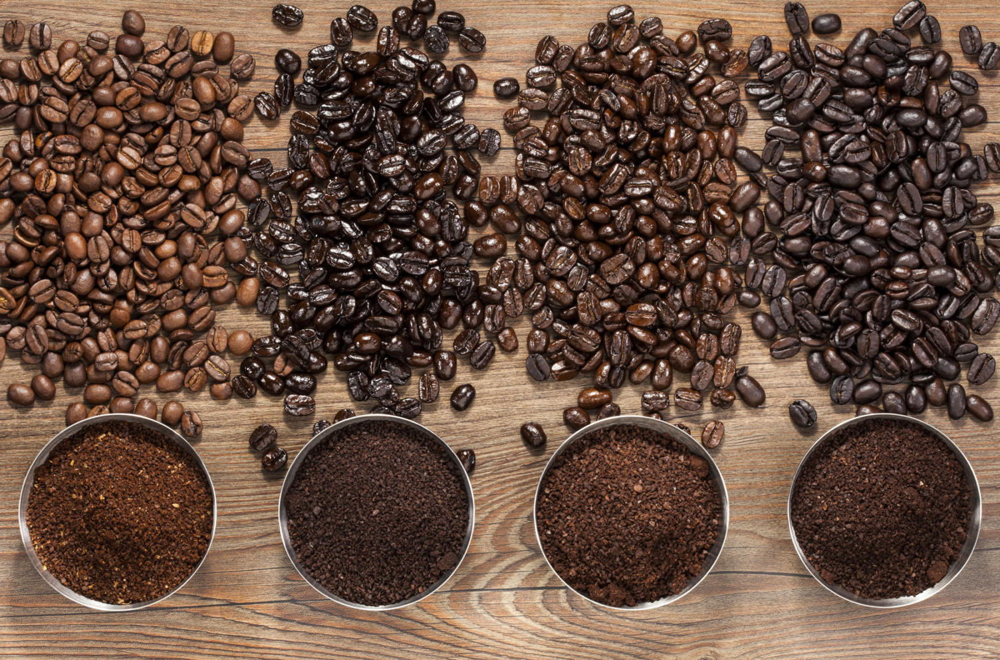

Our high quality standards are put to the test straight out of the soil where we grow our beans and again at our local roaster where they are packaged and shipped. Right when our beans are harvested they are graded with high quality criteria ensuring no bean imperfections. Through proper size, aroma, color, purity, and ripeness; our beans quality assurance is always tested before being shipped away. Once at our roaster they are closely monitored through small batches along every step of the roasting process. Finally, our coffee is given a quality control taste test to promote high quality consistency before being packaged and shipped directly to you!
